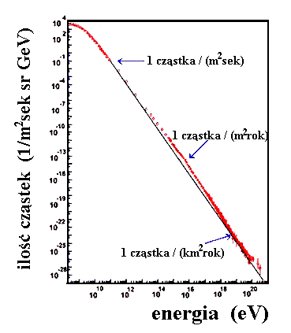
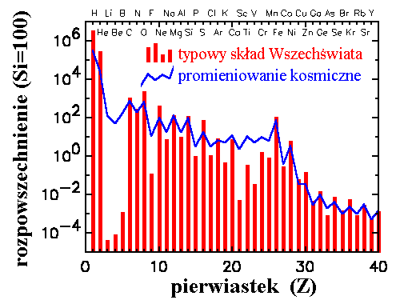
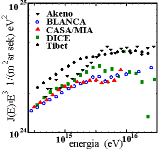
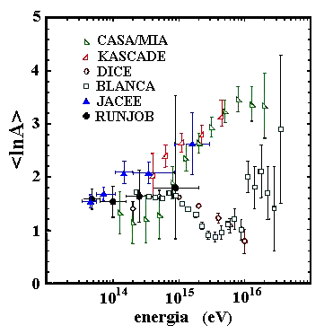
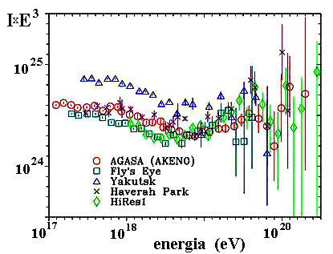

|
widmo promieniowania kosmicznego |
|
co i z jakimi energiami do nas przychodzi
|
Promieniowanie
kosmiczne to strumien czastek wysokich energii przychodzacych z przestrzeni
kosmicznej do granic ziemskiej atmosfery. O istnieniu promieniowania
kosmicznego wiemy dopiero mniej wiecej od stu lat, mimo to mamy wszelkie
podstawy, by sadzic, ze towarzyszylo nam (niemal) od zawsze.
Czastki
wysokich energii przechodzac przez materie oddzialuja z nia, a gdy jest ich
dostatecznie duzo, wplyw takich oddzialywan, jesli materia ta jest materia ozywiona,
moze byc istotny. Ogolnie przyjmuje sie, ze wplyw promieniowania jonizujacego
na organizmy zywe jest negatywny. Na szczescie dla nas przed czastkami z
kosmosu chroni nas atmosfera, ktora jest na tyle gruba, ze zatrzymuje ich
zdecydowana wiekszosc. Docieraja do nas jedynie produkowane w oddzialywaniach
promieniowania kosmicznego w atmosferze czastki o energiach wielokrotnie
mniejszych (nazywane wtornym promieniowaniem kosmicznym). Jonizacja materii
przez wtorne promieniowanie przy powierzchni Ziemi porownywalna jest z
jonizacja, ktora powstaje w wyniku rozpadu radionuklidow w skorupie ziemskiej.
Te dwa typy promieniowania tworza nieusuwalne radioaktywne tlo, w ktorym
zanurzeni jestesmy chcac nie chcac, nie odczuwajac specjalnie jego negatywnego wplywu.
Z drugiej strony nie do konca jest jasny wplyw tego tla na czestosc pojawiania
sie mutacji, a tym samym na szybkosc procesu ewolucji. Nie jest wykluczone, ze
promieniowanie kosmiczne odegralo (odgrywa?) calkiem znaczaca role w rozwoju
zycia na Ziemi.
Ostatnio
wykryto tez, ze promieniowanie kosmiczne ma zapewne wplyw na klimat na Ziemi.
Dlugookresowe zmiany natezenia promieniowania jonizujacego w gornych warstwach
atmosfery zmieniajac warunki, w jakich formuja sie chmury (ten sam efekt
wykorzystywany jest jako zasada dzialania tzw. komory mglowej- niezwykle
spektakularnego detektora czastek naladowanych), wplywac mogly na zmiany
globalnej temperatury naszej planety.
Gwaltowne
zmiany natezenia promieniowania kosmicznego w bardzo krotkiej skali czasowej
zwiazane z aktywnoscia Slonca moga wywolywac i wywoluja zaklocenia w transmisji
satelitarnej, sieciach komunikacyjnych i energetycznych. Stanowia one dodatkowo
realne zagrozenie dla wszelkiego rodzaju satelitow krazacych wokol Ziemi.
Jak
z tego widac promieniowanie kosmiczne, pozornie tak odlegle od naszych spraw
codziennych, moze wplywac na nie wielorako i calkiem znaczaco.
|
Promieniowanie kosmiczne niskich energii (ponizej 1012
eV).
|
Wsrod
czastek promieniowania kosmicznego zdecydowana wiekszosc stanowia czastki o
wzglednie niskich energiach, takich, jakie znamy z naszych ziemskich
laboratoriow. Dzis, w najwiekszych istniejacych akceleratorach, czlowiek
potrafi nadac czastkom energie do okolo 1012 eV. W promieniowaniu
kosmicznym zdarzaja sie jednak czasem czastki o energiach miliony (dziesiatki,
a nawet setki milionow) razy wiekszych. Tak wysokich energii nie uda nam sie
nadac najmniejszym fragmentom materii najprawdopodobniej nigdy. Promieniowanie
kosmiczne stanowi zatem jedyna mozliwosc badania zachowania sie materii w tak
ekstremalnych warunkach. Dzis coraz wiecej fizykow "akceleratorowych" zaczyna
z
uwaga sledzic wyniki badan promieniowania kosmicznego.
|

Widmo energii
promieniowania kosmicznego. Strzalkami zaznaczono jakich strumieni czastek o
energiach wiekszych niz pokazana spodziewac sie mozemy na granicy ziemskiej
atmosfery.
|
|
Podstawowa
zagadka zwiazana z promieniowaniem kosmicznym jest jego pochodzenie. W calej
historii tego problemu pojawialo sie bardzo wiele, egzotycznych dzisiaj,
propozycji jego rozwiazania, jak chocby ta, ze za przyspieszanie naladowanych
elektrycznie czastek odpowiadaja roznice potencjalow generowane w atmosferze
przez pionowe ruchy mas powietrza. O ich istnieniu przekonac sie mozemy dobitnie
podczas kazdej burzy. Promieniowanie kosmiczne byloby zatem czyms na ksztalt
nieustajacej i bezglosnej blyskawicy. Z hipoteza ta wiaze sie nazwisko C.T.R.
Wilsona, wynalazcy komory mglowej, o ktorej mowa byla powyzej. Dzis juz mamy
pewnosc, ze nie wyjasnia ona wszystkich obserwowanych zjawisk, choc
wykorzystanie promieniowania kosmicznego dla pomiarow rozkladu przestrzennego
pol elektrycznych w atmosferze wydaje sie calkiem interesujace. Inne
rozwiazanie proponowal R.A. Millikan, wybitny fizyk znany powszechnie z
pomiarow ladunku elektronu. Jego zdaniem promieniowanie kosmiczne byloby
skutkiem procesow powstawania pierwiastkow w odleglych gwiazdach. Mechanizm
taki rzeczywiscie funkcjonuje, jednak moglby byc odpowiedzialny za bardzo
niewielki ulamek tego, co jako promieniowanie kosmiczne dociera do Ziemi.
Wraz
z rozwojem wiedzy (eksperymentalnej) o naturze promieniowania kosmicznego
powstawaly wciaz nowe teorie jego pochodzenia. Dzis wiemy juz dosc dokladnie,
co do nas przychodzi (im wieksza energia czastek, tym wiedza nasza
skromniejsza), ciagle nie wiemy jednak skad i jakie fizyczne mechanizmy
odpowiadaja za nadawanie czastkom tak gigantycznych energii.
W
obszarze niskich energii (lewy koniec widma)
istotna role odgrywa aktywnosc Slonca. Na skutek reakcji jadrowych w nim
zachodzacych i skomplikowanych procesow w zewnetrznych warstwach atmosfery
naszej najblizszej gwiazdy emituje ona ciagle, w mniejszym lub wiekszym
natezeniu tzw. wiatr sloneczny. Pola magnetyczne w Ukladzie Slonecznym
dodatkowo utrudniaja wnikanie don promieniowania kosmicznego z przestrzeni
miedzygwiezdnej. Wplyw ten maleje jednak wraz z energia czastek i w koncu
(okolo energii kilku GeV) zanika i dominujacym staje sie promieniowanie z
odleglych zrodel. Tworza je przede wszystkim trwale czastki obdarzone ladunkiem
elektrycznym. Cecha ta powoduje, ze tory ich zakrzywiaja sie (bardzo) w
chaotycznych polach magnetycznych naszej Galaktyki, przez co kierunki ich
przychodzenia nie mowia nic o miejscu, z jakiego pochodza. Z drugiej strony
wiemy calkiem dobrze, jakiego rodzaju sa to czastki: glownie jadra atomow, od
najlzejszego, wodoru, czyli po prostu pojedynczego protonu, az po uran, a moze
i dalej nawet. Okazuje sie, ze sklad chemiczny promieniowania kosmicznego
bardzo przypomina typowy sklad materii we Wszechswiecie.

Sklad chemiczny
promieniowania kosmicznego (linia lamana) w porownaniu z typowym skladem
materii w Ukladzie Slonecznym (histogram).
Analizujac
szczegolowo pewne drobne oden odchylenia mozemy powiedziec nie tylko cos o
materii, z jakiej zbudowane sa zrodla promieniowania kosmicznego, ale takze,
jak dlugo promieniowanie to do nas z tych zrodel lecialo. Wsrod bowiem
zlozonych jader znajduja sie w nim takze nietrwale izotopy rozpadajace sie z
czasem, a i te trwale po dostatecznie dlugim czasie fragmentuja zderzajac sie z
materia miedzygwiazdowa.
Docierajace
do atmosfery w duzej liczbie czastki niskoenergetycznego promieniowania
kosmicznego sa odpowiedzialne za powstanie wiekszosci silnie jonizujacych i
przenikliwych mionow, ktore stanowia istotna czesc tla promieniowania
jonizujacego przy powierzchni Ziemi. Miony to ciezkie rodzenstwo elektronow.
Miony zyja w spoczynku ok. mikrosekundy, ale dzieki efektom relatywistycznym te
o energiach kilku GeV w wiekszosci przelatuja przez atmosfere (lot z wysokosci
10 km zabiera im ok. 30 mikrosekund).
|
Promieniowanie kosmiczne o energiach 1014
-
1017
eV.
|
Im
energia czastek promieniowania kosmicznego wieksza, tym ich strumien staje sie
coraz mniejszy. Widac to wyraznie na rysunku przedstawiajacym widmo
energetyczne promieniowania kosmicznego. Powyzej energii 1015 eV
czastek promieniowania kosmicznego staje sie na
tyle malo, ze nie udaje sie
mierzyc ich ilosci bezposrednio (na satelitach,
czy balonach
stratosferycznych). Na szczescie energie te sa na tyle duze, ze
czastki takie
przechodzac przez atmosfere nie gina w niej bezpowrotnie, a
powoduja powstanie
zjawiska zwanego wielkim pekiem
atmosferycznym.
Wielkie
peki promieniowania kosmicznego
odkryli w roku 1938 dwaj francuscy uczeni:
Pierre Auger i Roland Maze.
Zaobserwowali oni, ze do powierzchni Ziemi
przychodza jednoczesnie czastki
naladowane o wysokich energiach w ilosciach
liczonych w milionach rozrzucone
na powierzchniach setek metrow kwadratowych.
Wytlumaczenie tego zjawiska dzis
wydaje sie calkiem proste. W mysli teorii
kaskadowej podanej juz w roku 1936
przez Bhabhe i Heitlera czastka bardzo
wysokiej energii oddzialujac gdzies u
szczytu atmosfery wytwarza (z niczego -
kosztem swej energii kinetycznej)
nowe czastki. Maja one na tyle duze energie,
ze kazda z nich w kolejnych
oddzialywaniach tworzyc moze nastepne i nastepne,
ktore z kolei... itd.
Kaskada taka rozwija sie w atmosferze dopoki wystarcza
energii, potem czastek
zaczyna stopniowo ubywac. Przy wspomnianych energiach 1015
eV wielki pek osiaga maksimum swojego rozwoju mniej
wiecej w polowie
atmosfery (na wysokosci kilku kilometrow nad poziomem
morza). Poniewaz energie
wsrod produkowanych czastek rozdzielaja sie do
pewnego stopnia losowo, do
powierzchni Ziemi dociera ich jeszcze na tyle
duzo, aby zjawisko to dalo sie
zarejestrowac. Wystarczy rozstawic w
odleglosciach kilkunastu (kilkudziesieciu) metrow liczniki czastek
naladowanych o powierzchniach rzedu metra kwadratowego (im wieksze, tym
mniejsze gestosci czastek, a wiec tym mniejsze wielkie peki da sie
zarejestrowac) i czekac, az kilka z nich jednoczesnie zarejestruje przejscie
czastek.
Aparatura taka reaguje na
pojawienie sie czastki pierwotnej (u szczytu atmosfery) gdziekolwiek w
promieniu ustawienia detektorow. Malejacy strumien takich czastek jest wiec
rekompensowany duza powierzchnia zbierania.
Osobnym
i bardzo zlozonym problemem jest w przypadku tego typu pomiarow okreslenie
energii i rodzaju czastki pierwotnej. Z tego tez powodu (miedzy innymi)
nierozstrzygnietym pozostaje od ponad 40 lat problem dziwnego zalamania w
widmie energii promieniowania kosmicznego
widocznego nieco powyzej 1015eV.
Jednymi z
pierwszych prac, ktore doprowadzily do jego odkrycia, byly
eksperymenty
prowadzone w osrodku lodzkim przez prof. Aleksandra Zawadzkiego.
Jak widac na rysunku, gdzie
pokazany jest ten bardzo ciekawy obszar energii w odpowiednim powiekszeniu,
roznice w wynikach otrzymywanych przez rozne grupy sa calkiem znaczace.
|

Widmo promieniowania kosmicznego w okolicy
(zalamania).
Punkty odpowiadaja (najnowszym) pomiarom prowadzonym
przez rozne grupy eksperymentalne.
|
|
Jeszcze
wiekszym problemem jest ustalenie,
z jaka czastka ma sie do
czynienia. W kazdym
pojedynczym przypadku jest to praktycznie
niemozliwe,
mozna probowac pokusic
sie jednak o wyznaczenie czegos co byloby
"srednia
masa" (a
precyzyjniej srednim logarytmem z masy) czastki
pierwotnej. Poniewaz informacja
ta jest niezwykle istotna, eksperymentatorzy
dokladaja wszelkich staran, by ja
oszacowac. Wyniki
ich prob pokazuje rysunek
obok. Poza wieloma interesujacymi
szczegolami widac z niego, ze tam,
gdzie nie
siegaja juz pomiary bezposrednie
(RUNJOB i JACEE), wlasciwie niewiele da sie
powiedziec
na pewno. Przez to nie
da sie sformulowac zadnych daleko idacych
wnioskow co do natury zrodel
promieniowania kosmicznego w tym obszarze
energii, ani tez tym bardziej niewiele
mozna powiedziec o mechanizmach
przyspieszania czastek.
|

Srednia masa (a scislej jej logarytm
naturalny) wyznaczony z danych rejestrowanych przez rozne eksperymenty.
|
|
Promieniowanie kosmiczne o energiach powyzej 1017eV.
|
Im dalej
w strone wysokoenergetycznego konca widma (prawego), tym
sytuacja wyglada gorzej. Strumien czastek jest tam tak maly, ze niezbedne sa
naprawde wielkie eksperymenty, aby zmierzyc cokolwiek. Ich powierzchnia musi
byc liczona w kilometrach kwadratowych (a nawet ich dziesiatkach, a najlepiej
setkach). W obecnej chwili dzialaja trzy takie eksperymenty: w Jakucku w Rosji,
AGASA w Japonii i Fly's Eye (Hi-Res) w Stanach Zjednoczonych.
Dysponujemy tez
danymi z eksperymentow, ktore zakonczyly juz prace: Volcano
Ranch w USA,
Haverah Park w Anglii i SUGAR w Australii. Ze wzgledu na wage
problemow
zwiazanych z najwyzszymi energiami trwa obecnie budowa wielkiego,
miedzynarodowego eksperymentu (nazwanego imieniem Pierre'a Auger) w
Argentynie.
Aby zdac sobie sprawe z tego, co wiemy o promieniowaniu
kosmicznym najwyzszych
energii, na rysunku obok pokazano zestawienie
wszystkich opublikowanych dotad
danych na temat widma energetycznego w tym
obszarze.
Jak widac z
rysunku, obserwacje sa wciaz jeszcze niewystarczajace. Bledy pokazane w postaci
pionowych kresek przy poszczegolnych punktach zwiazane sa z bardzo mala liczba
zarejestrowanych przypadkow. Swiatowa statystyka wszystkich przypadkow o
energiach szacowanych na wieksze niz 4 1019 eV nie przekracza
kilkuset, a powyzej 1020 eV dwudziestu kilku (przy czym szacowania
te sa oczywiscie bardzo nieprecyzyjne). Najwieksza zarejestrowana energia
pojedynczej czastki oceniana jest na okolo 3 1020 eV.
Spekulacje na
temat rodzaju (np. masy atomowej) nie daja tu tez zadnych istotnych wskazowek.
Ogolnie stwierdzic nalezy, ze wiemy bardzo niewiele, a jedyne, co wiemy na
pewno to, ze obserwujemy czastki o energiach siegajacych 1020eV.
|

Widma
promieniowania kosmicznego najwyzszych energii mierzone przez rozne grupy
eksperymentalne.
|
Mozna
by zadac (wcale nie takie pozbawione sensu) pytanie, dlaczego wiedza ta nam nie
wystarcza. Dlaczego chcielibysmy wiedziec wiecej? Do czego nam to tak naprawde
jest potrzebne? W koncu i tak wiele jest rzeczy ("na niebie i ziemi"), o
ktorych nie wiemy wszystkiego.
Podstawowy
problem nurtujacy fachowcow od blisko 40 lat mozna by sformulowac w prostym
stwierdzeniu:
Czastek o tak wielkich energiach w ogole
nie powinno byc.
Dlaczego?
Ich
energie sa tak wielkie, ze przez Galaktyke przelatywalyby praktycznie po
liniach prostych i gdyby ich zrodla byly gdzies blisko, widzielibysmy
zgrupowania wielkich pekow przychodzacych z okreslonych kierunkow na niebie. A
nic takiego nie widzimy. A jesli bylyby produkowane odpowiednio daleko, aby w
przestrzeni miedzygalaktycznej zgubic w polach magnetycznych informacje o
miejscu swoich narodzin, powinny oddzialac z wypelniajacymi ja fotonami
mikrofalowego tla (promieniowania pozostalego po Wielkim Wybuchu, majacego dzis
temperature okolo 3 K i wypelniajacego dokladnie cala przestrzen) i stracic w
oddzialywaniach tych znaczaca czesc swojej energii. Tak mowi nam fizyka
wspolczesna i wydaje sie, ze nie ma innego wyjscia. Coz wiec zrobic z
czastkami, ktore sa, mimo ze nie powinno ich byc? Zagadke te starano sie juz
rozwiazac na wiele sposobow. Czesc z nich nawoluje do rewizji (bardziej lub
mniej gruntownej) samych podstaw naszej wiedzy o Wszechswiecie. Nowa Fizyka
zdaje sie czekac tuz za rogiem. Rozstrzygniecie, jak to jest naprawde, moze
doprowadzic do kolejnej rewolucji w naszym rozumieniu rzeczywistosci, natury
rzeczy, czy Natury jako takiej. Mamy tu do czynienia z materia w najbardziej ekstremalnych
warunkach, o niewyobrazalnych wrecz energiach. Dosc powiedziec, ze jedna czastka elementarna niosac energie 1020
eV ma jej tyle, co cegla spadajaca z balkonu drugiego pietra, tyle ile
pilka tenisowa podawana przez ktoregos z najlepszych tenisistow.
Gdyby kazdy proton i neutron w
takiej pilce mial taka energie, wystarczyloby jej do unicestwienia Ksiezyca
(gdyby ukierunkowac ja odpowiednio). A wszystko to zmagazynowane w jednym
najmniejszym skladniku atomowego jadra! Az strach pomyslec, co by bylo,
gdybysmy poznali mechanizmy generujace takie energie i potrafili je
wykorzystac. Problem ten wydaje sie nawet zbyt wielki dla wspolczesnej
literatury fantastycznonaukowej, choc moglby zapewnic realizacje najdalszych
podrozy bez wiekszego trudu. Ale pozostawmy takie i podobne rozwazania
fantastom i wrocmy do bardziej realnego swiata fizyki dzisiejszej.
Rozmaite
egzotyczne mniej lub bardziej hipotezy wyjasniajace istnienie gigantycznych
pekow promieniowania kosmicznego prowadza do rozniacych sie nieco szczegolowych
przewidywan co do ksztaltu widma energii i charakterystycznych cech
najwiekszych wielkich pekow. Aby moc przynajmniej niektore z nich odrzucic,
ograniczajac pole do efektownych spekulacji, potrzeba wnioski z nich wynikajace
porownac z obserwacjami. A jak widac chocby na rysunkach, obserwacje sa ciagle
jeszcze malo precyzyjne. Dodatkowo, co tez widac na rysunku, wyniki
poszczegolnych grup roznia sie od siebie daleko bardziej, niz dopuszczalaby
statystyka zebranych przypadkow. Wszystko to prowadzi do wniosku, ze kazdy nowy
eksperyment, kazde nowe dane sa niezwykle cenne i pozadane. W przeciagu
dziesieciolecia zapewne zbudowane zostana nowe aparatury, pojawia sie nowe
wyniki i byc moze doprowadza one do jakichs rozstrzygniec. Eksperymenty takie
sa jednak bardzo zlozone, a co za tym idzie trudne w realizacji i kosztowne.
Aby plany te zrealizowac, niezbedny jest wspolny i bardzo miedzynarodowy
wysilek i budzety liczone w setkach milionow dolarow. Wydaje sie, ze mozliwosci
osiagniecia znaczacych fizycznie wynikow inaczej, niz uczestniczac w takim
przedsiewzieciu, sa raczej znikome. Okazuje sie jednak, ze nie do konca. Mozna
zaplanowac eksperyment, ktory:
obejmowalby swoim zakresem o wiele wiecej problemow
niz tylko ten,
podstawowy, pomiaru najwiekszych wielkich
pekow,
Projekt takiego eksperymentu
nazwalismy imieniem Rolanda Maze'a.
|
|